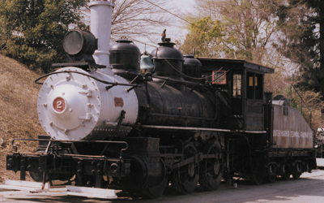

Last updated: 9 September, 2025
| Builder: | ALCO (Schenectady) |
| Build #: | 2409 |
| Date: | 1887 |
| Engine #: | 2 |
| Railroad: | Outer Harbor Terminal |
| Website: | www.railgiants.org |
| Email: | Contact Us (form) |
| Location: | Los Angeles County Fairground, RailGiants Train Museum, 1101 W McKinley Ave, Pomona, CA 91768 Fairgrounds address. |
| GPS: | 34.083691, -117.770318 Museum entrance. 34.082322, -117.770716 Probably the best access point, assuming the gate is open. |
| Phone: | |
| Status: | Display |
| Notes: | For open dates and hours, see www.railgiants.org. |
At the time of its retirement, Outer Harbor Terminal number 2 was reputed to be the oldest locomotive in daily service in the United States. Outer Harbor Dock and Wharf, Inc. Union Oil Company donated the locomotive to the Southern California Chapter in December, 1955. It is an 0-6-0 switching locomotive, and was used along the docks at San Pedro, California. It was originally built for Santa Fe Railway as their number “590”, then it was sent to the Southern California Railway as their number “40”. The Santa Fe assumed ownership of the Southern California Harbor Dock & Wharf and renumbered the engine “2”. The company later became the Outer Harbor Terminal Railway Company when the Union Oil Company took over operation of the OHD&W.
| Class: | |
| Gauge: | 4'-8½" |
| F.M.Whyte: | 0-6-0 |
| Drivers: | 53” |
| Gear Ratio: | |
| Tractive Effort: | |
| Weight: | 78 tons |
| Weight on Drivers: | |
| Length: | 51’ 6” |
| Boiler: | |
| Cylinders: | |
| Top Speed: | 30 mph |
| Horsepower: | |
| Fuel: | |
| Fuel Type: | Oil |
| Water: | |
| Steam psi: | 140 |